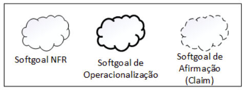
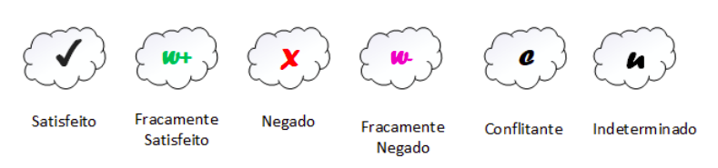
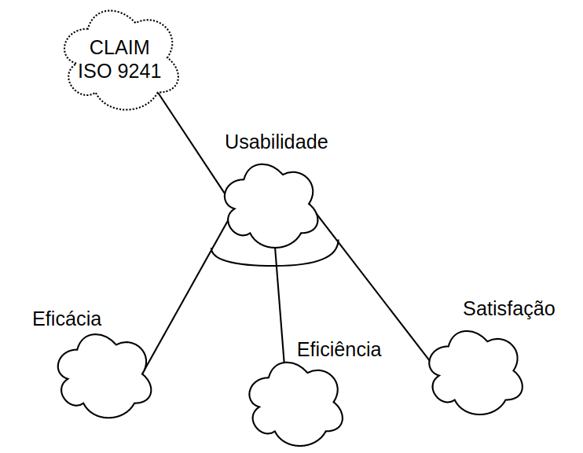
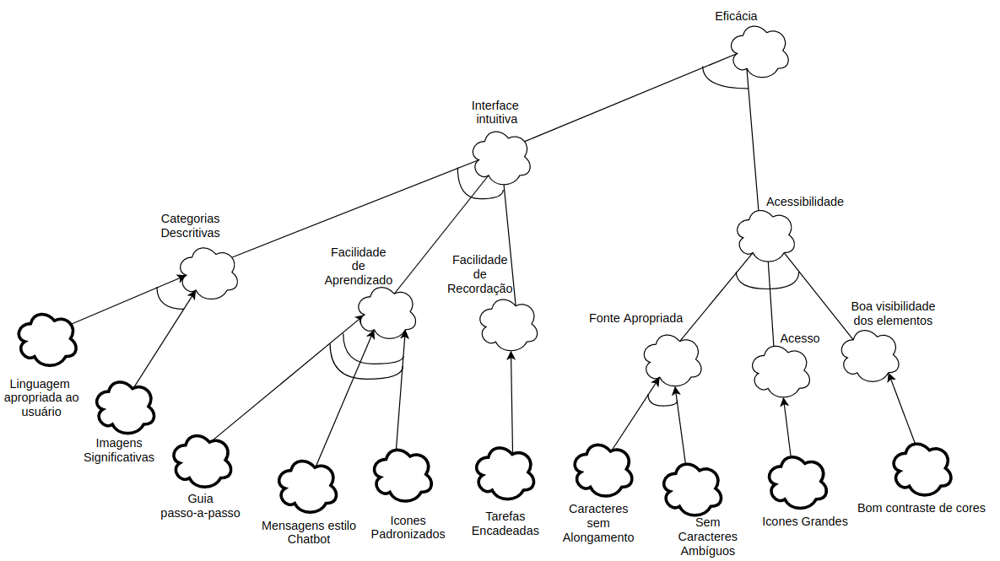
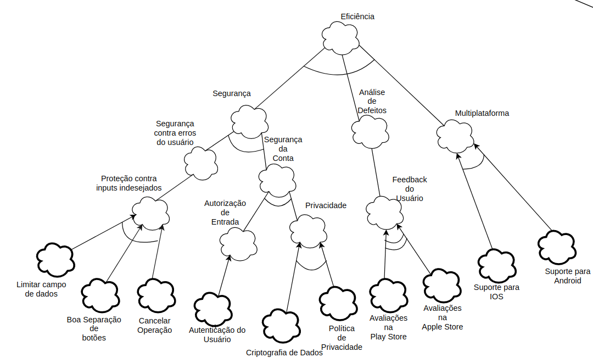
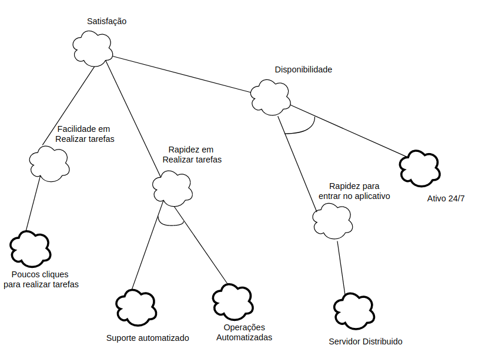
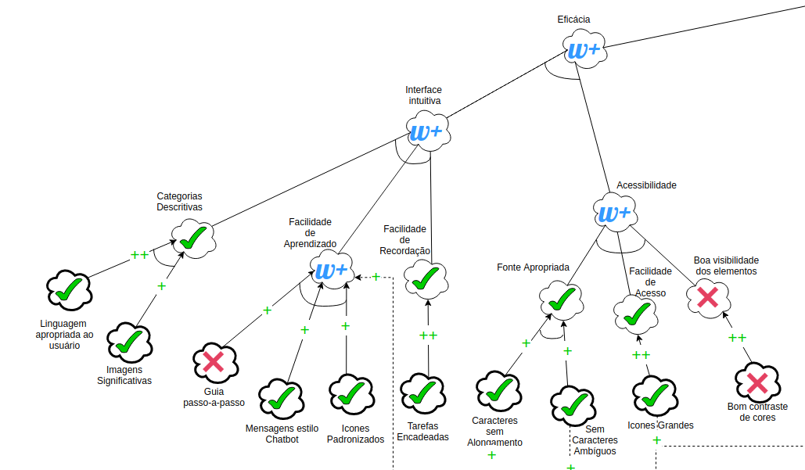
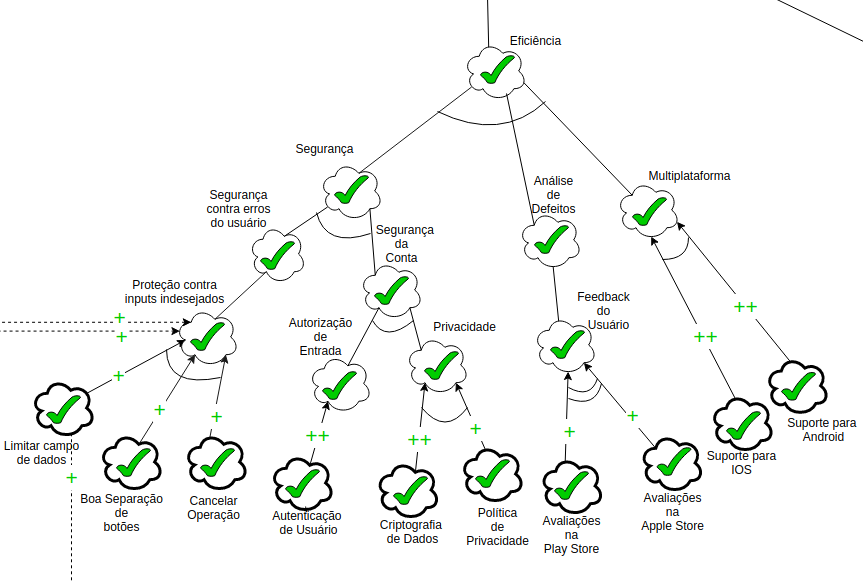
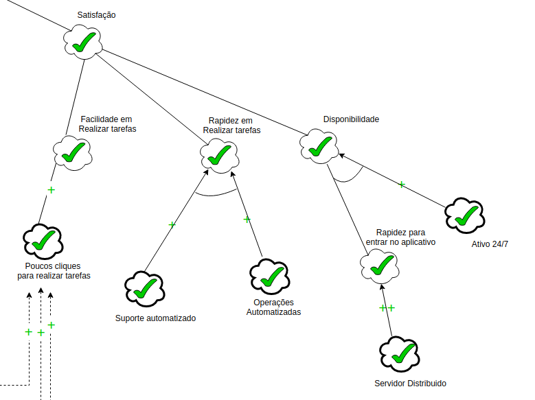

NFR Framework
1. Introdução
Existem muitas formas de se representar e analisar requisitos não funcionais (NFR), dentre elas vale citar as árvores de qualidade de software, a técnica FURPS +, e a classificação feita pela “standard ISO/IEC 9126”. Essas classificações são úteis para a questão de análise de NFR, entretanto, há uma falta de consistência entre elas.
No artigo escrito pelos cientistas da computação Lawrence Chung e Julio Cesar Sampaio do Prado, em que é descrito o NFR Framework, eles argumentam sobre como alguns aspectos são tratados de forma diferente entre essas técnicas clássicas, mas sem uma concordância entre elas. O principal diferencial do NFR Framework é descrever um procedimento consistente para modelar os NFR elicitados em uma unidade denominada “Softgoal”, e analisar esses softgoals e suas relações de maneira que a equipe de desenvolvimento pode determinar se os softgoals foram satisfeitos ou não.[1]
2. Softgoals
Utilizado pelo NFR Framework, um softgoal é um objetivo que não possui uma clara definição nem critérios de satisfação precisos. Os softgoals são utilizados para representar Requisitos Não-Funcionais e podem estar inter-relacionados, expressando a influência de
um softgoal em outro.[2]
Existem 3 tipos de softgoals que podem ser vizualizados na Figura 1, são eles:
- Softgoals NFR : representam os Requisitos Não- Funcionais e podem estar interrelacionados, organizados em catálogos e apresentados de forma hierárquica no desenvolvimento do projeto (CHUNG et al., 2000).
- Softgoals de Operacionalização : representam soluções de implementação para satisfazer softgoals NFR ou outros softgoals de operacionalização (CHUNG et al., 2000).
- Softgoals de Afirmação : permitem que as características do domínio (como prioridades e carga de trabalho) sejam consideradas e devidamente refletidas no processo de tomada de decisão. (CHUNG et al., 2000).

É possível utilizar, no NFR Framwork, diversos tipos de contribuições para descrever como a satisfação ou não de um softgoal descendente irá contribuir para a satisfação do softgoal ascendente.[2] Os tipos de contribuição são:
| Contribuição | Descrição |
|---|---|
| AND | Estabelece que os softgoals ascendentes serão satisfeitos se os softgoals descendentes forem satisfeitos. |
| OR | Se algum softgoal descendente for satisfeito, então o ascendente também será. |
| MAKE(++) | Fornece uma contribuição suficientemente positiva entre um softgoal descendente e um ascendente. |
| BREAK(--) | Fornece uma contribuição suficientemente negativa entre um softgoal descendente e um ascendente. |
| HELP(+) | Fornece uma contribuição parcialmente positiva entre um softgoal descendente e um ascendente. |
| HURT(-) | Fornece uma contribuição parcialmente negativa entre um softgoal descendente e um ascendente. |
| UNKNOWN(?) | Fornece uma contribuição desconhecida entre um softgoal descendente e um ascendente. |
| EQUALS | O softgoal descendente será satisfeito somente se o softgoal ascendente for satisfeito e o softgoal descendente será negado se o ascendente for negado. |
| SOME (+|-) | Utilizada quando o sinal de contribuição é conhecido,mas a extensão não é. |
O procedimento de avaliação determina o grau que os requisitos não funcionais são satisfeitos por um conjunto de decisões. Para isso, são atribuídos rótulos para os softgoals, representados nas formas indicadas na Figura 2.[2]

3. NFR e os Softgoals
Segue abaixo uma relação dos softgoals referentes aos requisitos não funcionais elicitados para o projeto.
| ID | Requisito | Origem | Softgoals |
|---|---|---|---|
| RNF 01 | O aplicativo deve ter compatibilidade com qualquer sistema operacional | BNF01 | Portabilidade |
| RNF 02 | O sistema deve recusar o acesso de pessoas não autorizadas | INF04, BNF02 | Segurança |
| RNF 03 | As funcionalidades devem se parecer com uma conversa (chatbot) | QNF03, SNF02, BNF04 | Acessibilidade |
| RNF 04 | O aplicativo não pode ter grande espaço de armazenamento. | INF01 | Desempenho |
| RNF 05 | O aplicativo não pode ficar indisponível por mais que 10 minutos por dia. | INF02, SNF03 | Disponibilidade |
| RNF 06 | O aplicativo não pode apresentar dados de cunho privativo que não seja do próprio usuário. | INF03 | Segurança |
| RNF 07 | O usuários devem conseguir encontrar a funcionalidade desejada em menos que três clicks. | INF05 | Usabilidade |
| RNF 08 | O aplicativo deve se comunicar com o banco de dados. | INF06 | Usabilidade e Segurança |
| RNF 09 | O aplicativo deve proteger os dados dos usuários. | QNF01, INF07, SNF05 | Segurança |
| RNF 10 | O aplicativo deve ser desenvolvido em uma linguagem que tenha uma comunidade ativa e/ou que não tenha previsão de descontinuade da linguagem nos próximos 5 anos. | INF08 | Portabilidade e Disponibilidade |
| RNF 11 | O usuário não pode ficar mais de 15 minutos em fila para acessar o aplicativo. | SNF01 | Desempenho |
| RNF 12 | O sistema deve ser acessível para Pessoas com Deficiência (PcD) | QNF02, ENF02, BNF03 | Acessibilidade |
| RNF 13 | O código de segurança gerado para realizar compras com cartão de débito virtual deve ser válido para apenas uma compra | QNF04 | Segurança |
| RNF 14 | Ter a opção de guia para primeiro acesso | ENF03, ONF01 | Acessibilidade |
3.1 Diagrama NFR Geral
3.1.1 Diagrama NFR Usabilidade

3.1.2 Diagrama NFR Eficácia

3.1.3 Diagrama NFR Eficiência

3.1.4 Diagrama NFR Satisfação

3.2 Diagrama NFR com propagação
3.2.1 Diagrama NFR com propagação da Eficácia

3.2.2 Diagrama NFR com propagação da Eficiência

3.2.2 Diagrama NFR com propagação da Satisfação

Bibliografia
[1] CHUNG, L.; NIXON, B. A.; YU, E.; MYLOPOULOS, J. Non-functional requirements in software engineering. Springer Science & Business Media: [s.n.], 2000. v. 5. Disponível aqui. Acessado em 03/09/21.
[2] DA SILVA, Reinaldo Antônio. NFR4ES: Um Catálogo de Requisitos Não-Funcionais para Sistemas Embarcados. 2019. Dissertação (Mestrado em Ciência da Computação) - Universidade Federal de Pernambuco, Recife, 2019.
Versionamento
| Versão | Data | Modificação | Autor |
|---|---|---|---|
| 1.0 | 03/09/2021 | Criação da págia e Introdução | Ariel Serafim |
| 2.0 | 04/09/2021 | Melhoria no layout e adição dos tipos de softgoals | Lucas Gomes |
| 3.0 | 04/09/2021 | Adição dos tipos de contribuição e tipos de rótulos | Lucas Gomes |
| 4.0 | 09/09/2021 | Adição da tabela relacionando NFR e softgoals | Ariel Serafim |
| 5.0 | 11/09/2021 | Adicionados diagramas NFR com e sem propagação | Fernando Calil |